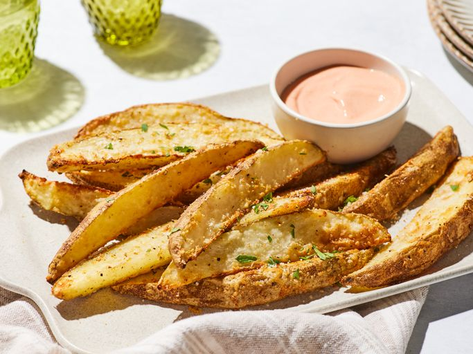

My Favorite Potato Wedges Recipe!

Description
Potato wedges are a delicous and tender way to enjoy your potatos, goes great with a variety of seasonings and meals, and very easy to make!
Ingredients
- 2 russet potatoes, scrubbed and cut into eighths
- 1 tablespoon olive oil
- 1 teaspoon onion powder
- 1 teaspoon garlic powder
- 1/4 teaspoon salt
- 1/4 teaspoon ground black pepper
- (Optional) 1/4 cup grated parmesan cheese
Directions
- Gather all ingredients
- Preheat over to 425 degrees F or 220 degrees C
- Place potatoes, olive oil, onion powder, garlic powder, salt, pepper, and optional parmesan cheese into a resealable bag
- Seal the bag, and then shake until the potatoes are evenly coated with seasoning
- Spead the potatoes out on a baking sheet
- Bake in the preheated overn until potatoes can be easily pierced with a fork, about 25 minutes.
- Enjoy!
Home